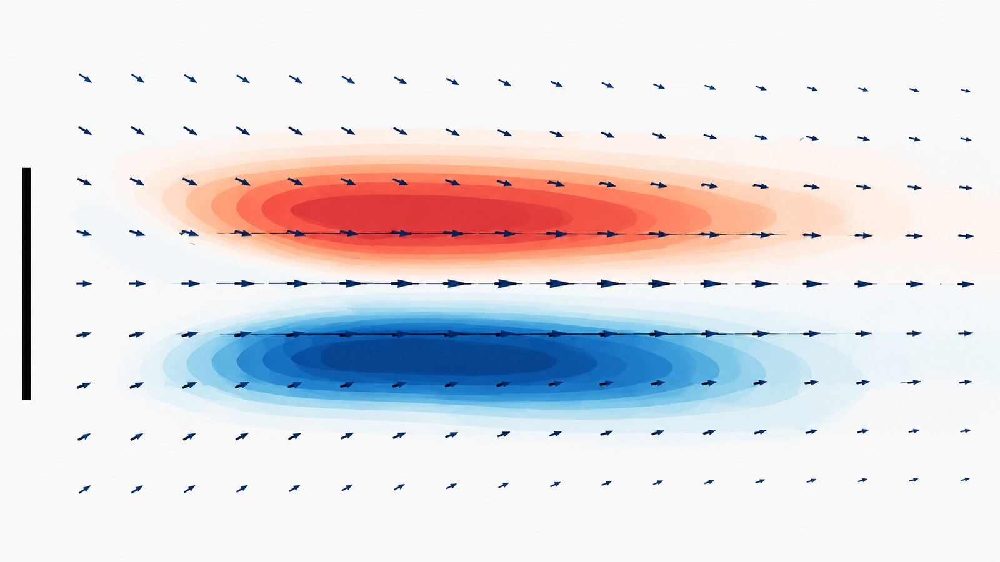
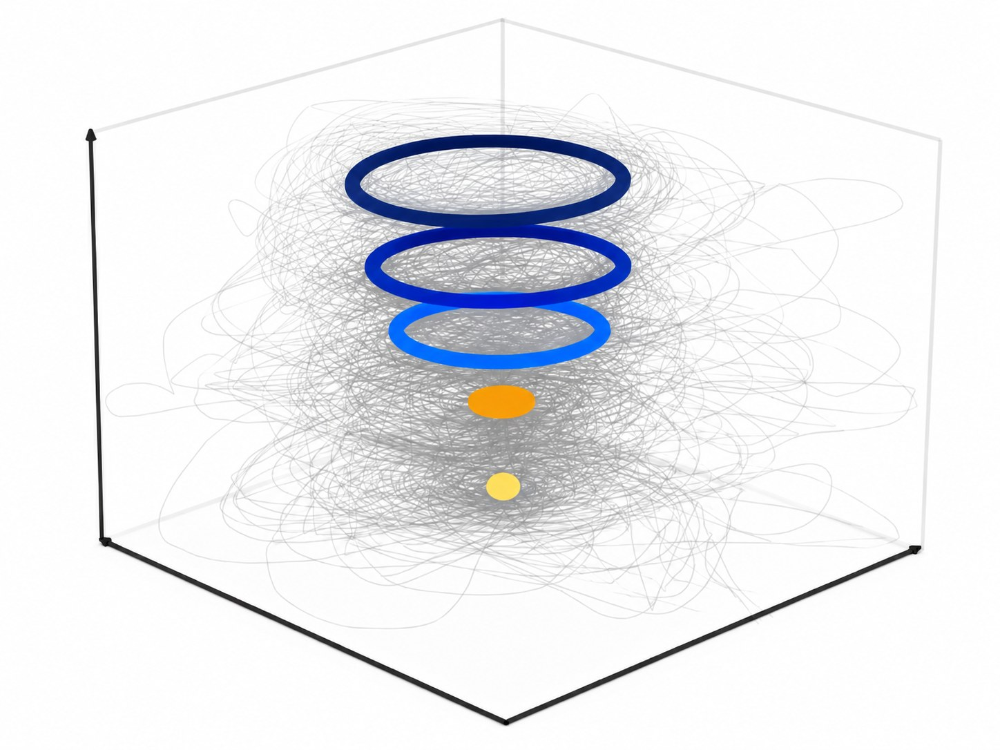
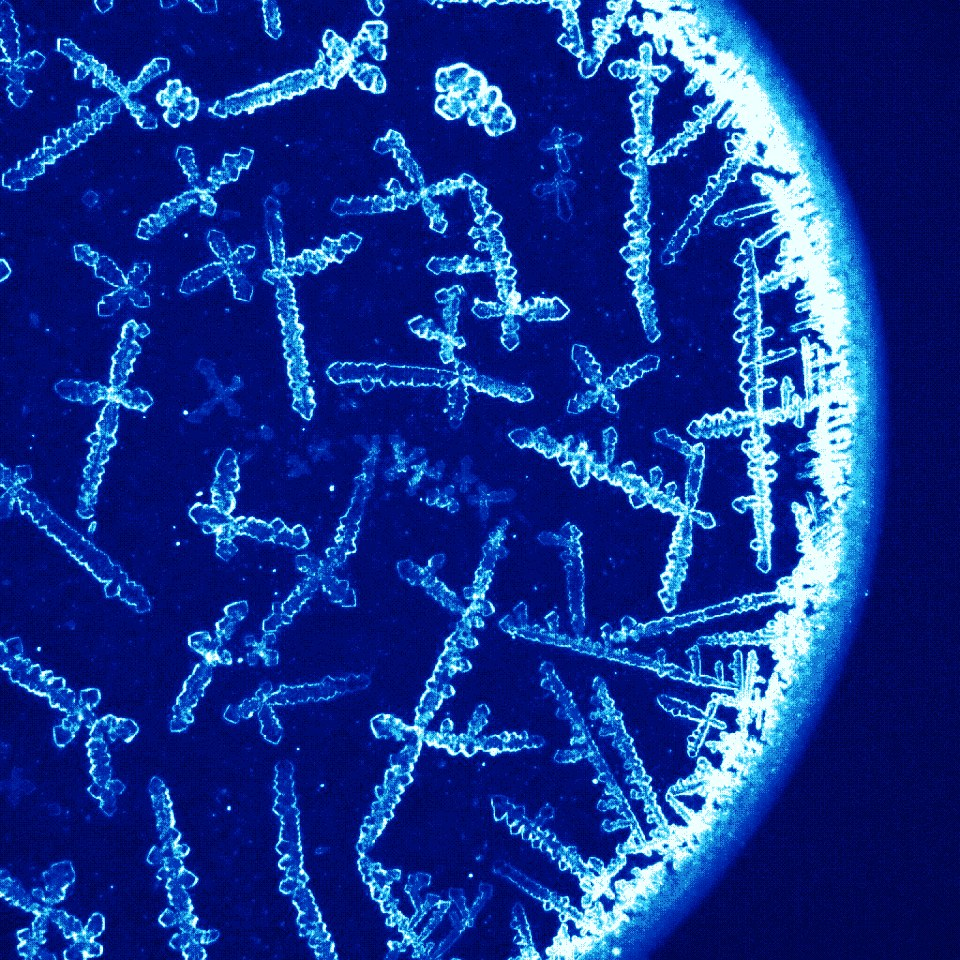

Invited speakers
Invited speakers
Plenary lectures
Invited speakers will be announced once confirmed. Speaker profiles will include name, affiliation, country, lecture title and abstract.
In addition to the invited plenary lectures, the best submitted abstracts will be selected for extended 30-minute contributions.
Plenary speakers: to be confirmed
Flow visualization
Science in motion




